ROUTES
DISCOVER YOUR PERFECT ROUTE
From imperial cities to alpine peaks: 4 hand-picked routes to experience the best of our country.
ROUTE 1: THE IMPERIAL HERITAGE TRAIL
Focus: History and grand architecture.
Path: Vienna ⮕ Linz ⮕ Salzburg.
Duration: 5 Days.
Transport: Railjet Train (ÖBB).
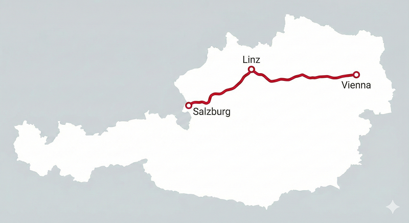
ROUTE 2: ALPINES & LAKE ADVENTURE
Focus: Nature and outdoor experiences.
Path: Salzburg ⮕ Hallstatt ⮕ Zell am See ⮕ Innsbruck.
Duration: 7 Days.
Transport: Rental Car or Regional Bus.
ROUTE 3: THE DANUBE VALLEY ESCAPE
Focus: Vineyards, rivers, and medieval abbeys.
Path: Vienna ⮕ Krems ⮕ Dürnstein ⮕ Melk.
Duration: 3 Days.
Transport: River Cruise or Bicycle.
ROUTE 4: THE SOUND JOURNEY
Focus: Music and cultural traditions.
Path: Salzburg ⮕ Eisenstadt ⮕ Vienna ⮕ Salzburg.
Duration: 4 Days.
Transport: Rental Car or Regional Bus.
ROUTE 1: THE IMPERIAL HERITAGE TRAIL
Duration: 5 Days.
Transport: Railjet Train (ÖBB).
The Imperial Heritage Trail. Embark on a journey through the heart of the Habsburg legacy. This route connects Austria's most iconic imperial cities, offering a deep dive into centuries of history, music, and grandeur.
Point A: VIENNA
Start in the majestic capital of the Habsburg Empire. Explore the opulent halls of the Hofburg Palace and the world-class art at the Belvedere. To live like a local, enjoy the century-old coffee house tradition with a classic Sacher Torte.
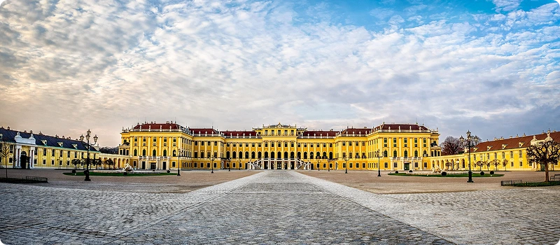
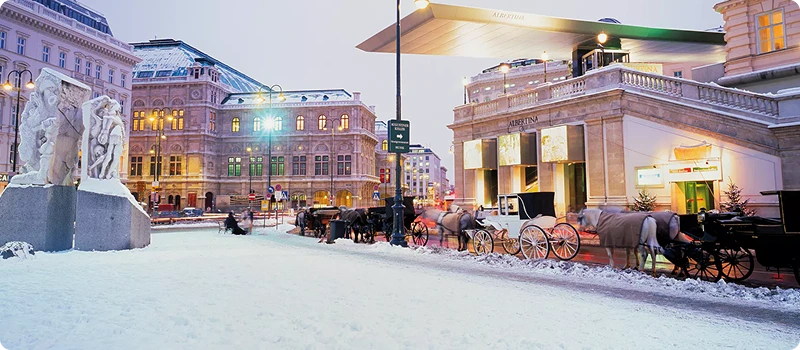
Point B: LINZ
Follow the Danube to Linz, where baroque tradition meets future technology. Stroll through the Hauptplatz, one of Europe's largest squares, and experience the digital revolution at the Ars Electronica Center, a UNESCO City of Media Arts.
Point C: SALZBURG
End your journey in the birthplace of Mozart. Wander through the baroque streets of the Old Town and the idyllic Mirabell Gardens. For the best views, climb to the Hohensalzburg Fortress to watch the sunset over the Salzach River.
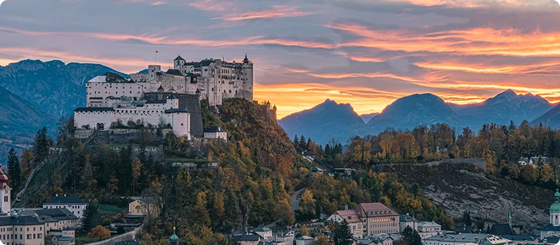
Transport Tip:
ROUTE 2: ALPINES & LAKE ADVENTURE
Duration: 7 Days.
Transport: Rental Car or Regional Bus.
A breathtaking journey through the heart of the Austrian Alps. This route connects world-famous lakeside villages with dramatic mountain landscapes and high-altitude adventures.
Point A: SALZBURG
Begin your mountain adventure in the city of music, which serves as the perfect gateway to the Alps. Before heading into the wild, take a cable car up to the Untersberg for your first taste of high-altitude views and explore the surrounding green valleys.
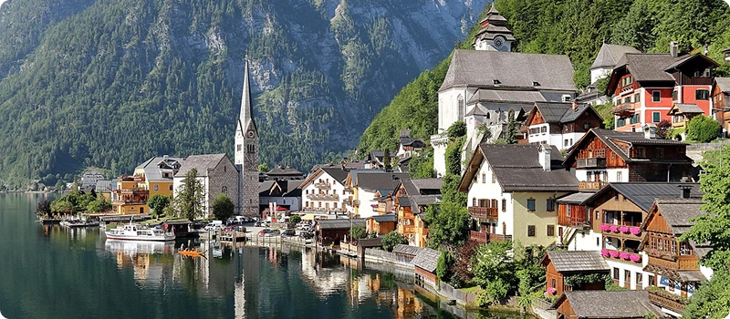
Point B: HALLSTATT
Drive to the most iconic village in Austria. Hallstatt is a UNESCO World Heritage site tucked between steep mountains and a glass-like lake. Walk through its prehistoric salt mines and don't miss the Skywalk for a stunning view from 360 meters above the roofs.
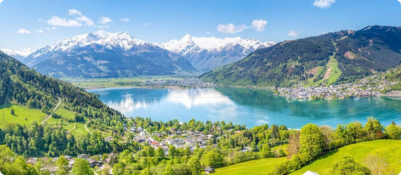
Point C: ZELL AM SEE
Continue to this alpine gem where the lake meets the glacier. Zell am See offers the perfect mix of water sports and mountain hiking. Take the lift up to Schmittenhöhe or visit the nearby Kitzsteinhorn glacier for year-round snow and ice.
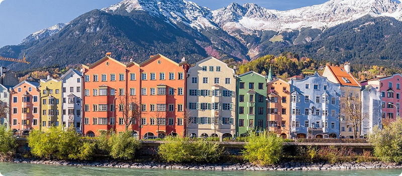
Point D: INNSBRUCK
Finish your trek in the heart of Tyrol. Innsbruck is a city completely surrounded by jagged peaks. Visit the famous Golden Roof in the old town and then take the Nordkette cable car directly from the city center to the top of the mountains in just 20 minutes.
Alpine Foodie:
ROUTE 3: THE DANUBE VALLEY ESCAPE
Duration: 4 Days.
Transport: River Cruise or Bicycle.
A scenic journey following the winding curves of the Danube River. This route is world-famous for its terraced vineyards, legendary castles, and some of the most beautiful abbey libraries in existence.
Point A: MELK
Start your river journey at the Melk Abbey, a yellow baroque masterpiece perched high on a cliff. Explore its world-renowned library and the marble hall, which are among the finest examples of European architecture.
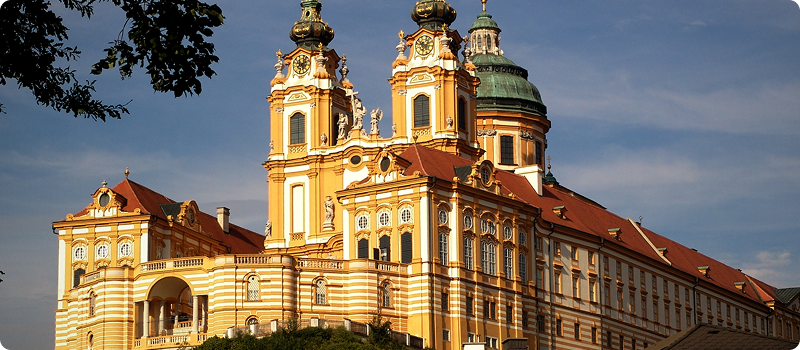
Point B: DÜRNSTEIN
Enter the heart of the Wachau Valley. Dürnstein is famous for its bright blue church tower and the ruins of the castle where Richard the Lionheart was once imprisoned. Take a hike up for the best view of the valley.
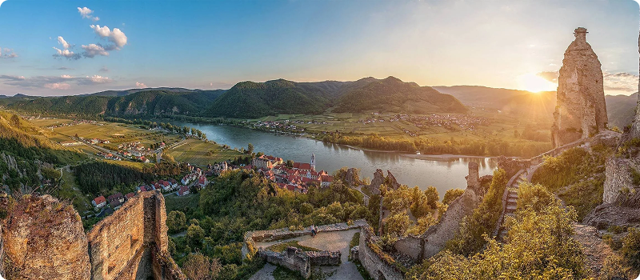
Point C: KREMS
As one of the oldest cities in Austria, Krems is a labyrinth of cobblestone streets and hidden courtyards. Visit the Steinertor (the city gate) and enjoy the vibrant local art scene that makes this town feel alive and modern.
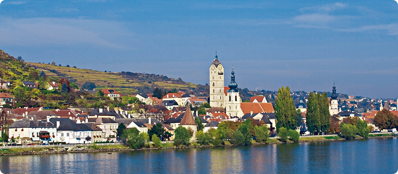
Did you Know?
ROUTE 4: THE SOUND JOURNEY
Duration: 4 Days.
Transport: High-speed Train.
Immerse yourself in the melodies that shaped a nation. This curated circular route is a tribute to Austria's unparalleled musical legacy, taking you from the baroque streets of Salzburg to the imperial stages of Vienna.
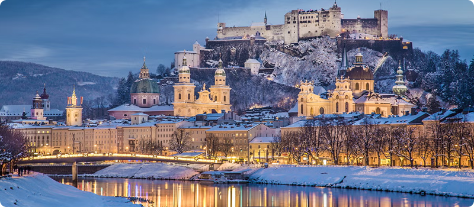
Point A: SALZBURG
Start your musical pilgrimage in the city of Mozart. Walk through the Getreidegasse to visit his birthplace and feel the baroque energy that inspired his greatest works. Don't miss the Mirabell Gardens, where the legacy of "The Sound of Music" still lives on.
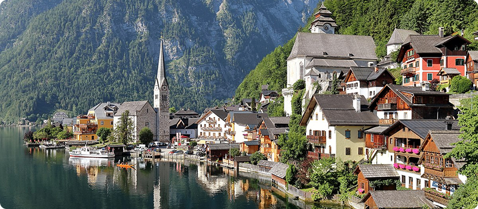
Point B: EISENSTADT
Head east to the charming city of Eisenstadt, the long-time home of Joseph Haydn. Explore the magnificent Esterházy Palace, where the "Father of the Symphony" composed many of his masterpieces. The Haydn Hall inside is legendary for its perfect acoustics.
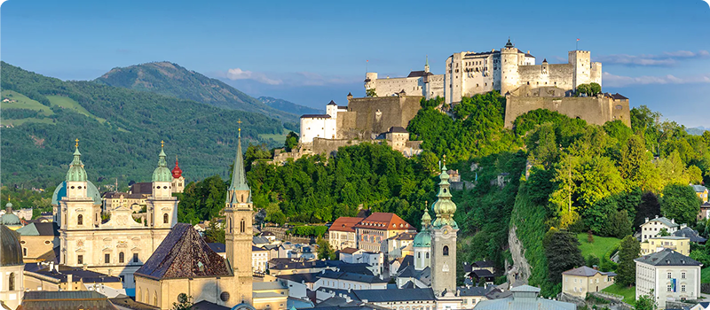
Point C: VIENNA
Arrive in the world's capital of classical music. From the Vienna State Opera to the House of Music (Haus der Musik), the city is a living museum. Experience a live performance in a historic venue to understand why Vienna remains the ultimate destination for music lovers.
Cultural Wellness